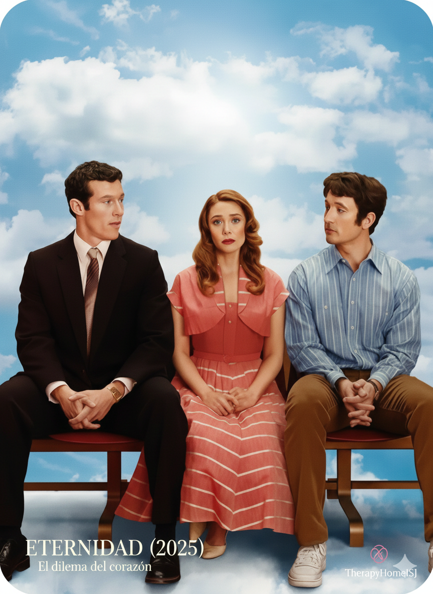

¿Por qué repetimos decisiones que nos lastiman?
El dilema de Eternidad (2025) y el autosabotaje en la pareja

El estreno de la película Eternidad (2025) ha puesto sobre la mesa una pregunta que muchas personas evitan hacerse en privado: si pudieras elegir a quién amar para siempre, ¿elegirías la estabilidad que hoy tienes o la euforia de algo que ya fue?
La historia de Joan —dividida entre Larry, su pareja actual, y Luke, un amor del pasado idealizado— no es solo una trama cinematográfica. Es una representación fiel de los conflictos internos que aparecen con frecuencia en terapia individual y de pareja, especialmente cuando existen patrones de infidelidad, evasión emocional o autosabotaje.
"Más que una elección romántica, el dilema de Eternidad refleja cómo funciona nuestro cerebro cuando tiene que decidir entre sostener lo que pesa o escapar hacia lo que promete alivio inmediato."
El cerebro y la recompensa inmediata
Cuando aparece la tentación de una “recompensa inmediata” no se está eligiendo solo a una persona; se está eligiendo una vía de escape emocional.
Ante el estrés o la desconexión afectiva, el cerebro activa su sistema de recompensa. La novedad genera una descarga de dopamina que funciona como un analgésico emocional: reduce momentáneamente el malestar o la sensación de vacío. En la película, Luke representa ese alivio rápido. Un amor que no atravesó la convivencia ni el desgaste cotidiano, y por eso se siente “ligero”.
Intensidad emocional vs. Bienestar a largo plazo
En psicoterapia individual aprendemos a diferenciar estos dos conceptos:
Se vive como euforia y conexión rápida porque no ha sido puesta a prueba por la realidad.
Se siente más "pesada" porque incluye historia, acuerdos, reparación y responsabilidad.
¿Por qué trabajar esto en terapia individual?
Aunque la crisis se manifieste en la relación, la raíz suele estar en procesos personales no resueltos. La terapia individual es la llave para:
- Identificar patrones de escape: entender qué vacío se intenta llenar externamente.
- Desarrollar tolerancia al malestar: aprender que la rutina o el conflicto no son señales de fracaso.
- Recuperar el control: pasar del impulso a elegir desde objetivos de vida coherentes.